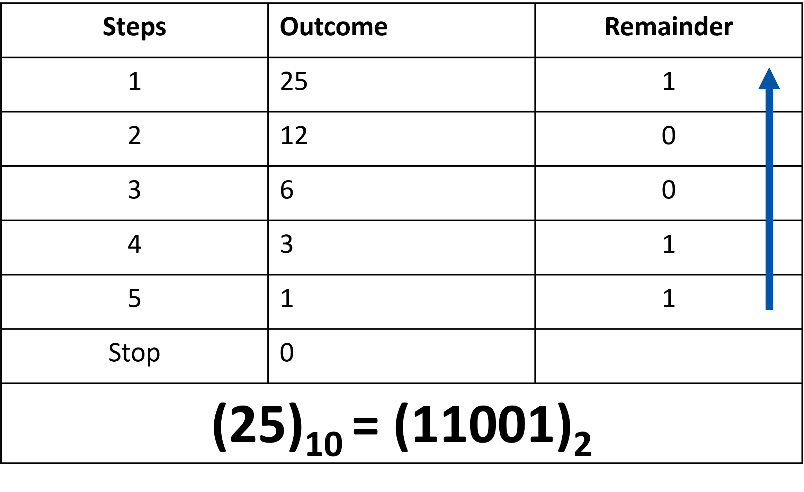

Introduction to Binary
What’s a bit, and how is it implemented in a computer?
Introduction to binary
Everyone “knows” that computers use “binary” to operate
But, as we saw last class, computers don’t “know” anything ultimately, its CPU is just configured to react in particularly sophisticated ways when its switches (the lightbulbs for the “guy in the box”) are turned on or off.
So what is binary anyway? And what does it have to do with computers?
In order to understand the Binary numeral system, we can compare it to something we already know: the Decimal numeral system.
In decimal , numbers are represented by combinations of ten different symbols: (0, 1, 2, 3, 4, 5, 6, 7, 8, 9).
We call decimal a base 10 numeral system.
If we have more than “9” of something, another digit is needed (another power of ten):
- 9 + 1 = 10
- 99 + 1 = 100, etc.
How do we represent numbers in binary and how does it compare to binary?
In binary , there are only two symbols (0, 1).
We call binary a base 2 numeral system.
If we have more than “1” of something, another bit (power) is needed:
- 1 + 1 = 10 (in english: one plus one equals two)
- 11 + 1 = 100 (in english: three plus one equals four)
It’s counterintuitive at first! But there’s nothing fundamentally different about binary than decimal – we’re just more used to using decimal instead. Since we’re reusing the symbols 1 and 0 from the decimal system, there is a convention to use subscript to disambiguate between different numeral systems:
12 + 12 = 102 is the same as 110 + 110 = 210 is the same as one plus one equals two
112 + 12 = 1002 is the same as 310 + 110 = 410 is the same as three plus one equals four
These subscripts are not always required, but can be very useful when the numeral systems are mixed in the same context.
Note: binary and decimal are not the only possible numeral systems. All that distinguishes numeral systems is the number of symbols you agree to use to represent numbers – there are infinite possible numeral systems!
Hexadecimal is another useful numeral system (16 symbols, or base 16) which we will discuss later in the course.
Bits: BInary digiTs ▪️▫️
So what does binary have to do with computers?
A Bit (Binary Digit) is the basic unit of information representing one of two discrete states. It is the smallest unit of information within the computer. Bits have one of two values:
- 0 (off) or 1 (on)
- 0 (False) or 1 (True)
We often compare this to a light switch being either on of off…

How are Bits physically implemented?
There are various ways to design circuits that effectively differentiate between “on” and “off” states. One method involves using a transistor, which can either be switched on or off to represent binary information. Another approach uses a capacitor, where its state of being charged or discharged conveys the desired data. In magnetic disks (like HDDs), information is stored as bits based on the direction of the magnetic field, either north-south or south-north. Similarly, on optical discs (such as CD-ROMs), bits are represented by whether a bit on the surface is shiny or not shiny. Lastly, over telephone lines or through radio, binary data is transmitted using high or low-pitched tones to represent the bits. Each of these methods relies on a distinct physical characteristic to represent binary information reliably.
{kind=link}

{kind=link}
Bytes üáß
A Byte is a collection of bits known as the unit of digital information. Historically, it was the number of bits required to encode a single character.
1 Byte = 8 bits
Abbreviation: B. E.g. 4B of storage means 4 Bytes means 32 bits.
{kind=link}
History of Bytes üìñ
A byte represents the number of bits used to encode a single character in a computer, making it the smallest addressable unit of memory in many computer architectures. Historically, the size of a byte was hardware-dependent, with no universal standard governing its size. However, in 1993, a standard was introduced that defined the size of a byte as 8 bits, a convention that is now widely adopted across modern computing systems. This standardization has helped ensure consistency in how data is stored and processed across different platforms and devices.
SI Convention üìú
| Unit Name | Symbol | Multiplying Factor | Multiplying factor (in thousands) | Description in English |
|---|---|---|---|---|
| Byte | B | 1 | 1 | One byte |
| Kilo Byte | kB | 1000 | 1000 | One thousand bytes |
| Mega Byte | MB | 1000,000 | 10002 | One million byte |
| Giga Byte | GB | 1000,000,000 | 10003 | One billion byte |
| Tera Byte | TB | 1000,000,000,000 | 10004 | One trillion byte |
| Peta Byte | PB | 10^15 | 10005 | One quadrillion byte |
| Exa Byte | EB | 10^18 | 10006 | One quintillion byte |
| Zetta Byte | ZB | 10^21 | 10007 | One sextillion byte |
| Yotta Byte | YB | 10^24 | 10008 | One septillion byte |
Source: NIST
IEC Convention üìú
To add to the confusion, Windows and some other operating systems don’t follow the SI conventions. They use symbols like Kb and Mb, but instead of referring to powers of 10, they count bytes in powers of 2. This means that if a manufacturer labels a hard drive using SI conventions, the operating system may display a smaller capacity than advertised.
In this course, we will stick to the SI conventions, where 1 Kilobyte equals 1000 bytes, and we will distinguish powers of 2 using the IEC convention. In the late 1990s, the IEC introduced new prefixes to clearly separate capacities based on powers of 10 from those based on powers of 2.
| Unit Name | Symbol | Multiplying Factor | Multiplying factor (in thousands) |
|---|---|---|---|
| Kibi Byte | Kib | 1000 | 1024 |
| Debi Byte | Mib | 1000,000 | 10242 |
| Gibi Byte | Gib | 1000,000,000 | 10243 |
| Tebi Byte | Tib | 1000,000,000,000 | 10244 |
| Pebi Byte | Pib | 10^15 | 10245 |
| gibi Byte | Eib | 10^18 | 10246 |
| Zebi Byte | Zib | 10^21 | 10247 |
| Yobi Byte | Yib | 10^24 | 10248 |
https://en.wikipedia.org/wiki/Byte#Multiple-byte_units
Johnny buys a 1Tb external SSD but once plugged into his Windows machine, he notices he only has 931 Gb of available memory space. Can you explain why?
Binary to Decimal üî¢
Similar to the decimal system, the binary system breaksdown a number in powers of 2 composing this number. ::: {layout-ncol=2}
:::
The steps to convert a binary number to decimal is straightforward üìù:
4️⃣ Find the power of 2 value for each bit of the binary number, starting from 0.(e.g., the power of 2 value for the 5th bit of a binary numberis: 25=32, etc.)
1️⃣ Add all the powers of two wherever there is a 1 in the bit of the binary number
➕ Add those powers of two → this is the decimal!
| Binary Number | 1 | 1 | 0 | 0 | 1 |
|---|---|---|---|---|---|
| Step 1: identify each bit | 4th bit | 3rd bit | 2nd bit | 1st bit | 0th bit |
| Step 2: power of 2 | 24 | 23 | 22 | 21 | 20 |
| Step 3: include value in sum if it’s a 1. | 16 | 8 | 0 | 0 | 1 |
| Step 4: Add all terms | 16 + 8 + 1 = 25 |
Therefore, 110012=2510.
Decimal to Binary 1️⃣0️⃣
Converting binary to decimal is easy to memorize for small numbers.
For example here is the binary numbers from 0 to 9:
| Binary | Binary |
|---|---|
| 0000 0000 | 1 |
| 0000 0001 | 2 |
| 0000 0010 | 3 |
| 0000 0011 | 4 |
| 0000 0100 | 5 |
| 0000 0101 | 6 |
| 0000 0110 | 7 |
| 0000 0111 | 8 |
| 0001 0000 | 9 |
What about larger numbers? How can we approach this problem systematically, i.e., use a defined method to confidently get the correct answer every time?
| Binary | Decimal |
|---|---|
| 1001 | 9 |
| 1101101 | ? |
| 1111111 | ? |
| 100000011000001 | ? |
After this lecture, you will have the tools to confidently fill out the rest of this table yourself!
Well, how do we do it for decimals? A large number, like 735, is in fact the combination of multiples of powers of ten. When we say these numbers in English, we naturally decompose the number into its component parts:
{kind=link}
735 is six hundred + thirty + five.
Or, in other words:
735 = 7x100 + 3x10 + 5x1
735 = 7x102 +30x101 +5x100
We can use this exact method, with one key difference, to decompose the value of binary numbers just like decimal numbers.
What key difference? In Binary, we use powers of 2 instead of powers of 10.
We’ll learn an algorithm to systematically decompose any decimal number into binary:
Convert Decimal to Binary by Repeated Division
➗ Divide the decimal number by 2 using long division.
✍️ Write down the quotient and remainder of the division on the side.
üîÅ Repeat steps 1 and 2 on the outcome.
⛔ Stop when the quotient becomes 0.
üì• Read the remainders from bottom to top → this is the binary number.
Example Convert 25 to binary.
Long Division (divide the Outcome by 2 at every step): 
{kind=link}
Range of numbers based on number of bits ↔︎️
When using a fixed number of bits, the total number of unique values we can represent is always limited by 2ùëõ, where ùëõ is the number of bits. This means that no matter how we arrange the bits, once all possible combinations are used, we cannot create any new unique numbers without adding more bits. For example, with 3 bits we can only represent 8 values (0‚Äì7 in decimal), and with 8 bits (1 byte) we are restricted to 256 values (0‚Äì255). This limitation is why larger data types like 2 bytes (16 bits) or 4 bytes (32 bits) are needed when working with bigger numbers.
- 1 bit -> can represent 2 numbers
- (0)2 = (0)10
- (1)2 = (1)10
- 2 bits -> can represent 4 numbers
- (00)2 = (0)10
- (01)2 = (1)10
- (10)2 = (2)10
- (11)2 = (3)10
- Values: 0 to 3 in decimal.
Exercises
Practise problems
Convert the following binary numbers to decimal using the method above.
- 1001
- 1101101
- 1000001
- 1111111
- 100000011000001
Check your answers (you can google search “1001 binary to decimal” or similar to get an answer)
Converting Decimal to Binary
Convert the following into binary. Show your work .
10
64
128
146
107
300